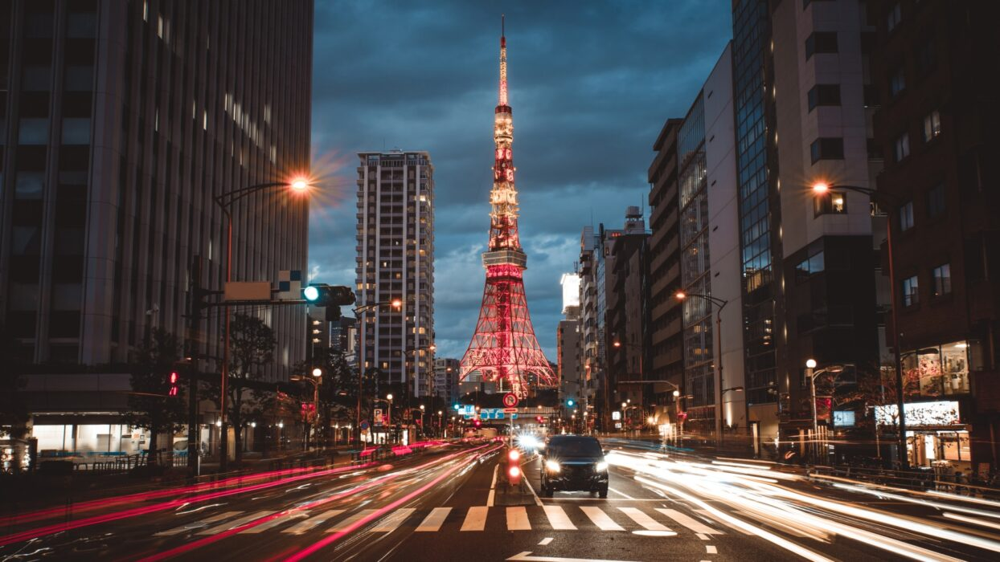

東京是一個充滿活力和對比的城市，從傳統的寺廟到現代的摩天大樓，這裡有著豐富的文化和美食體驗。
旅行愛好者
2024年4月10日
東京
家庭
情侶
美食
購物
文化

第一天：抵達東京 & 淺草寺
文化
景點
寺廟
早上：抵達成田機場
經過約4小時的飛行，我們終於抵達了東京成田機場。出關後，我們搭乘了機場快線前往市區的酒店。
第二天：銀座市場 & 原宿購物
第二天我們早起前往了築地市場外圍的商店街，品嚐了新鮮的壽司早餐。雖然主市場已搬遷至豐洲，但這裡仍有許多美食店家和海鮮餐廳。
中午我們前往銀座，這裡是東京最高級的購物區，雲集了世界各地的奢侈品牌和百貨公司。銀座的建築設計也非常現代化，每家店鋪都有其獨特的風格。
下午我們前往原宿，這裡是年輕人的時尚天堂。竹下通充滿了各種潮流服飾店和特色小店，街頭還能看到穿著各種風格服裝的年輕人。我們還品嚐了原宿著名的可麗餅，口味豐富，甜而不膩。
行程日誌
旅遊攻略
東京的公共交通非常發達，建議購買Suica或Pasmo卡，可以在地鐵、公車和部分商店使用。
從成田機場到市區可以搭乘成田特快(Narita Express)或京成電鐵Skyliner，約需1小時。羽田機場則可搭乘東京單軌電車或京急線，約30分鐘可到市區。
東京的住宿選擇豐富，從豪華酒店到經濟型旅館都有。建議住在山手線沿線，如新宿、澀谷、東京站或上野等地，交通便利。
預算有限的話，可以考慮膠囊旅館或青年旅舍，既經濟又能體驗日本特色住宿。
東京是美食天堂，從米其林星級餐廳到平價拉麵店都不容錯過。必嚐美食包括：壽司、拉麵、天婦羅、燒肉和居酒屋料理。
百貨公司的地下食品街(Depachika)也是品嚐各種日本美食和購買伴手禮的好地方。
標籤
東京
家庭
情侶
美食
購物
文化
相關文章
大阪五日遊 - 吃貨天堂之旅
探索關西地區的美食和文化...
京都古蹟之旅 - 尋訪千年古都
漫步在歷史悠久的寺廟和庭園...
北海道雪國之旅 - 冬季限定體驗
體驗滑雪、溫泉和美食的完美結合...
非常詳細的東京攻略！我想補充一點，如果時間允許，建議也可以去台場，那裡有鋼彈模型和許多購物中心，晚上的彩虹橋也很美。
感謝分享！請問淺草寺附近有推薦的美食嗎？我下個月要去東京，正在規劃行程。
@東京愛好者 淺草寺附近有一家名叫「浅草今半」的壽喜燒店非常推薦，雖然價格稍高但肉質非常好。如果想吃平價美食，仲見世通上的人形燒和炸饅頭都很值得一試！